Using machine learning to predict drownings in surf beaches of southwest France
![]()
December 4, 2023
Some context
Should France be your next vacation destination üèñÔ∏è ?
South west France surf beaches
The place to be ! üåü
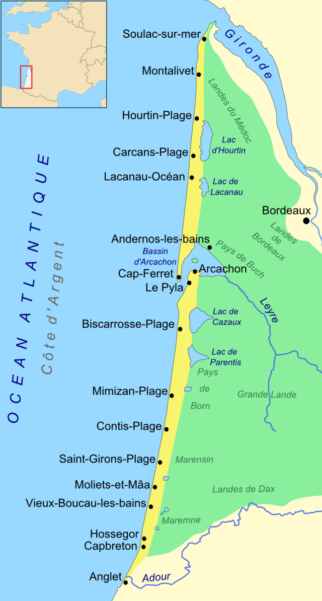

Some (üò®) numbers
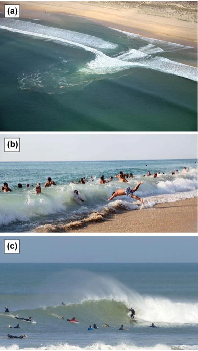
- One of the most dangerous coasts in the world (Castelle et al. 2019) : heavy rip current (Baïnes), shore break
- Thousands of rescues each summer
- 20 to 30 deaths each year
- About \(1\over2\) of swimmers bathe outside of the surveillance zone (Dehez and Lyser 2021)
Can we prevent drownings ? ü§î
Of course, there’s even a world class conference about it !
Can we prevent predict drownings ? ü§î
Spoiler : It was in the title
Previous work in France
- Physical modelling of hazard for South-west France : (Castelle et al. 2019)
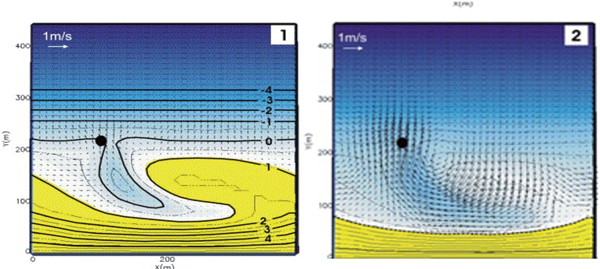
- Drowning risk prediction using Log. Regression (Tellier et al. 2021)
- Based on emergency calls database
- Probability of a drowning occuring each day, based on weather, oceanic and crowd data
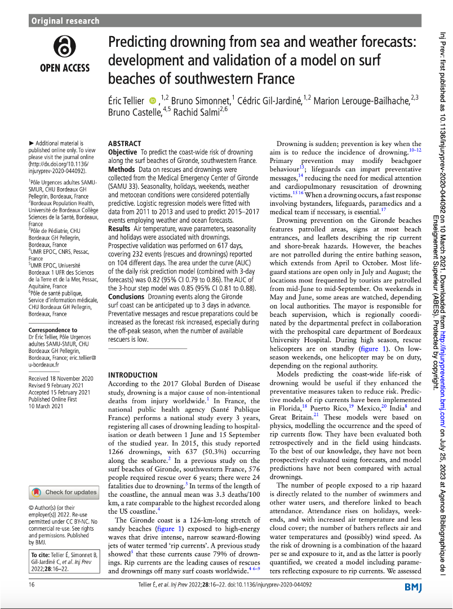
Goal of this work
Same philosophy as (Tellier et al. 2021) : Daily prediction based on weather and beach crowd
Better (and cleaner) data
New statistical methods üåü
New statistical methods üåü
Machine learning ü§ñ in a nutshell
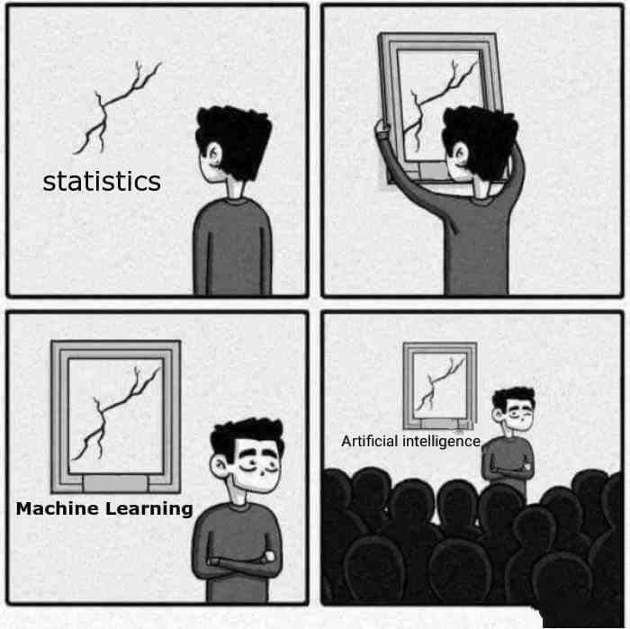
AI == ML == statistics & IFELSES
Risk modelling strategy and methods
Let’s play with some data
What’s a risk ?
Our definition :
Hazard : Is it dangerous ?
Exposure : Is the beach crowded ?
The predictors
Hazard (daily maximum)
Wave incidence factor : \({cos}_4H = cos((278 - D\_{SWELL}) \times \frac{\pi}{180})^4\)
Wave factor : \(HsTp = H_{SWELL} \times P_{SWELL}\)
Exposure
\(T_{air}\) : air temperature in °C (3-day pred. & daily max value)
\(day\) : day (ex : \(6\) for \(6^{th}\) of July)
\(month\) : month (ex : \(7\) for July)
\(wday\) : weekday (ex : \(1\) for monday)
The outcome
- Emergency calls database from 2011 to 2022 | N = 522
- Binary daily data (a drowning occured / no drowning occured)
Technical stuff üõ†Ô∏è
- Programming language : R
- Reporting and communication : Quarto
- Data wrangling and plotting : {tidyverse} ⭐
- Modelling framework : {tidymodels}
- Reproducible pipelines : {targets} and {renv}
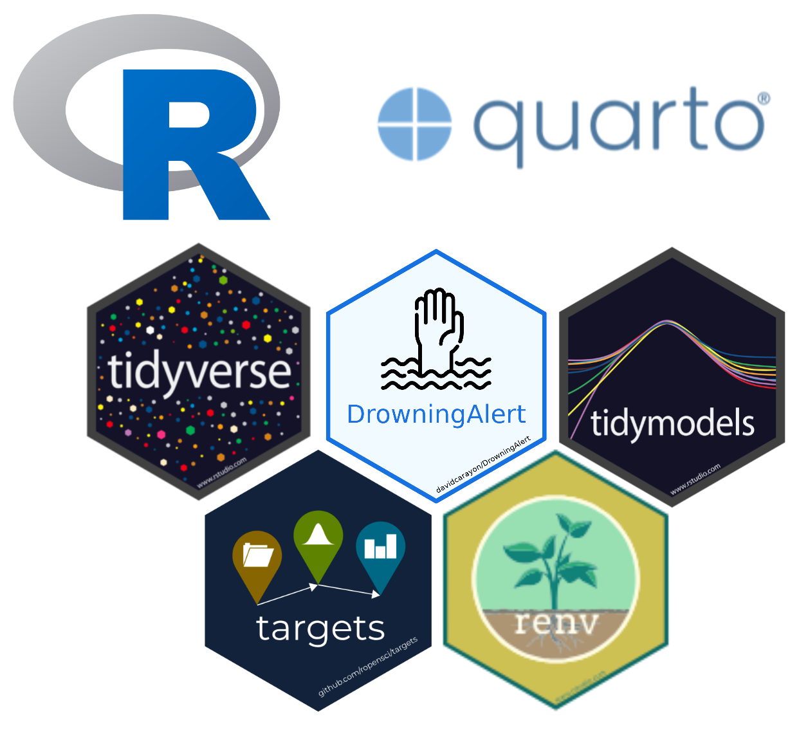
Our challengers
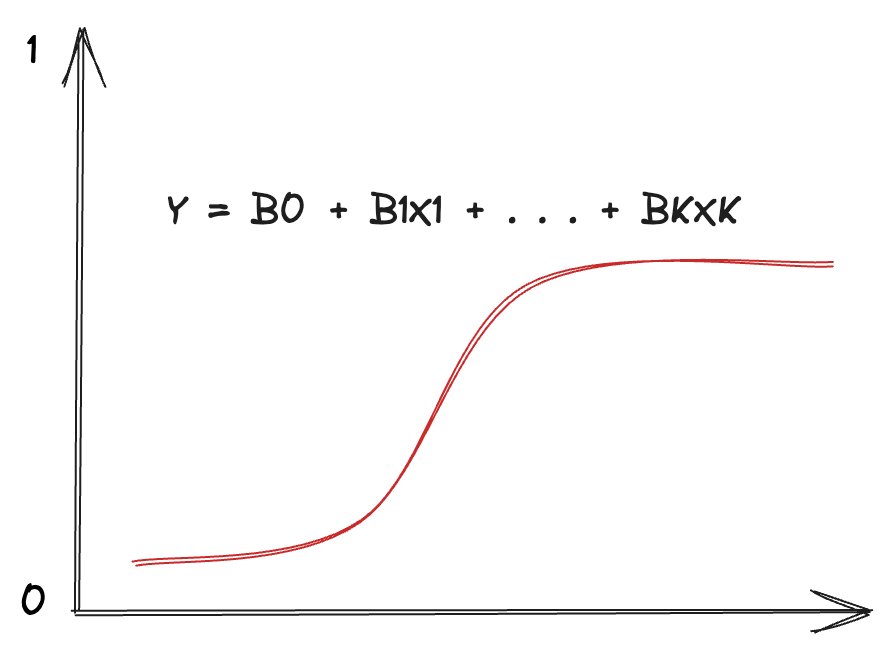
Logistic regression : No tuning parameters
- Classical regression for binary outcome
- Used in previous work (Tellier et al. 2021)
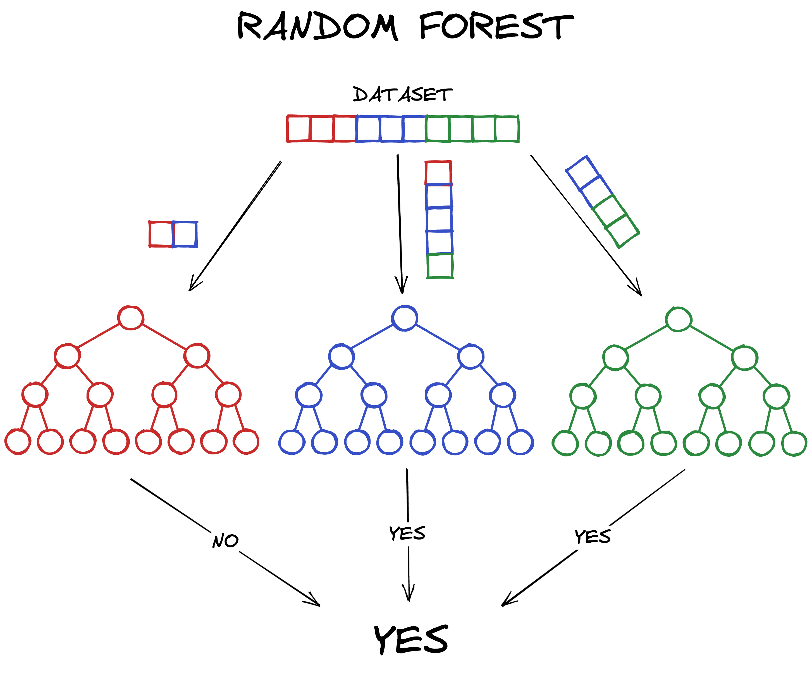
Random Forests : 3 tuning parameters
- # of trees
- # of random variables
- minimum tree depth
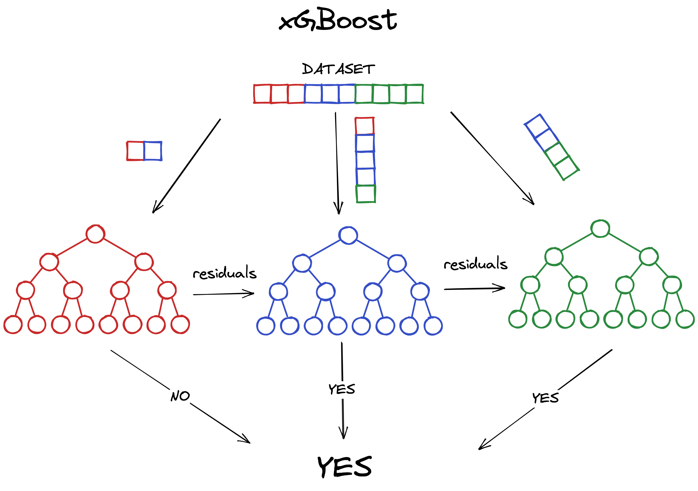
XGBoost : 4 tuning parameters
- same as RF
- learning rate
- spoiler: üèÜ
Modelling strategy
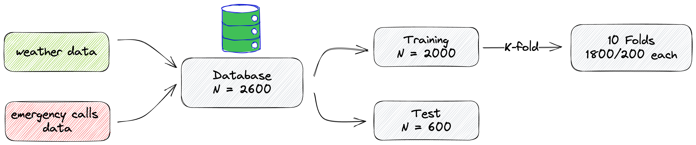About these steps
Pre-processing
- Centering, scaling, dummy-coding
- Synthetic Minority over-Sampling Technique (SMOTE) (Chawla et al. 2002) for the outcome
- removing correlations (\(r > 0.9\))
Modelling strategy
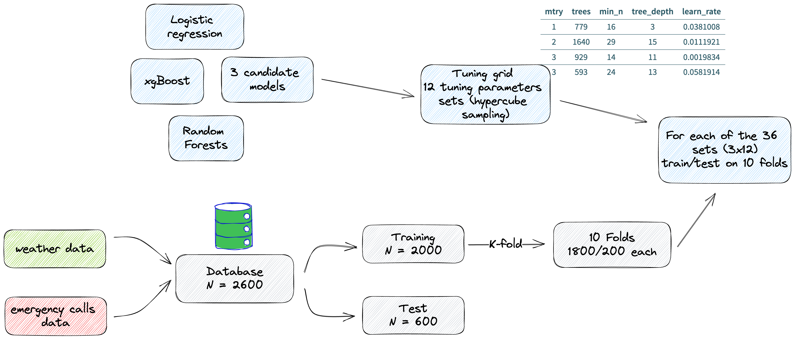About these steps
- Tuning grid generated by Latin Hypercube Sampling (Sacks et al. 1989)
Modelling strategy
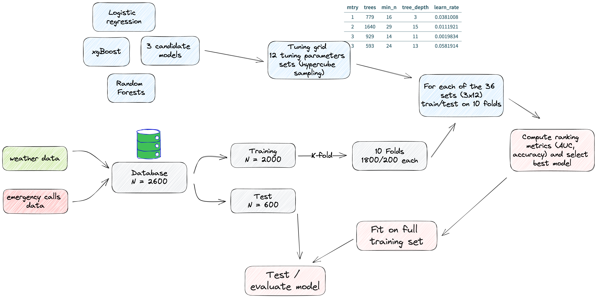Results
360 models later…
Tuning workflow results
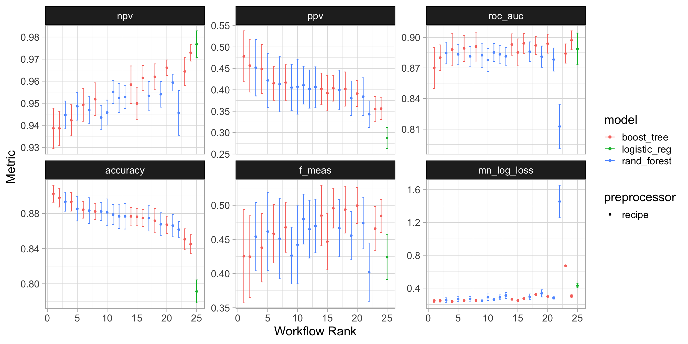I have bad news‚Ķ
Daily drownings events can’t be predicted with 100% precision.
What would be the best model ?
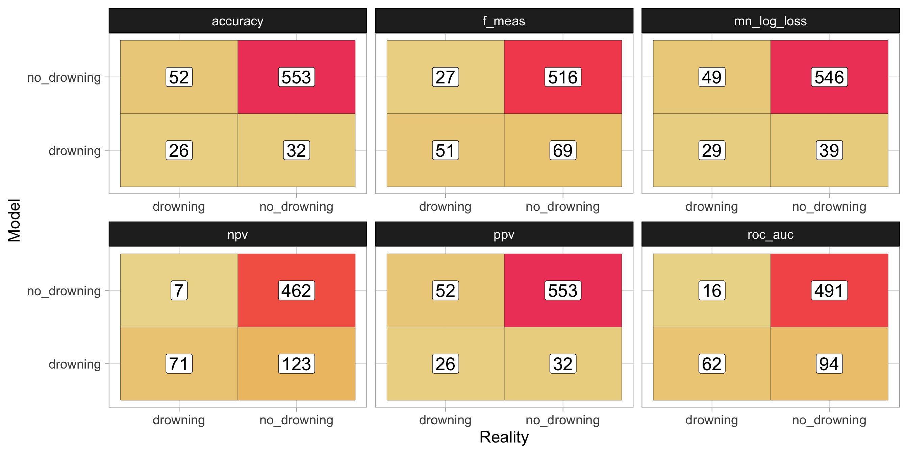Improving accuracy : Discretization
- The probability output by the model is discretized using 5 classes :
| Risk class | drownings | No drownings |
|---|---|---|
| 1 | 31 | 502 |
| 2 | 20 | 44 |
| 3 | 4 | 20 |
| 4 | 16 | 11 |
| 5 | 7 | 8 |
Discussion
- What is the best drowning prediction model ? Should we prioritize lowering false negatives or false positives ? \(\rightarrow\) Risk management and political decisions
- Low improvements over previous models \(\rightarrow\) dataset limitation ?
- Emergency call database only covers \(\approx1.35\%\)(üò±) of all rescues
Perspectives and future work
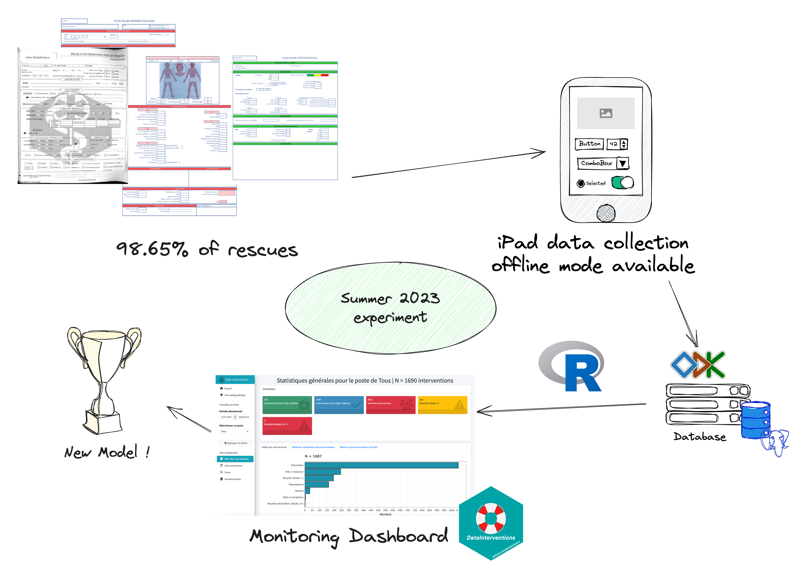Perspectives and future work
Want to try this at home ?
Try our üì¶ {DrowningAlert} on and get in touch with us !

Thank you!
References
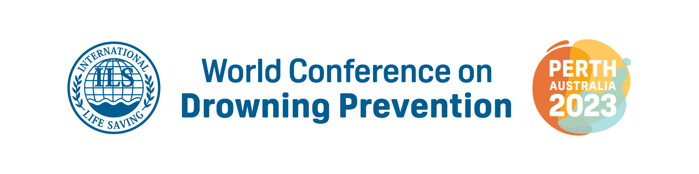D. Carayon et al. 2023 | Predicting drownings using machine learning